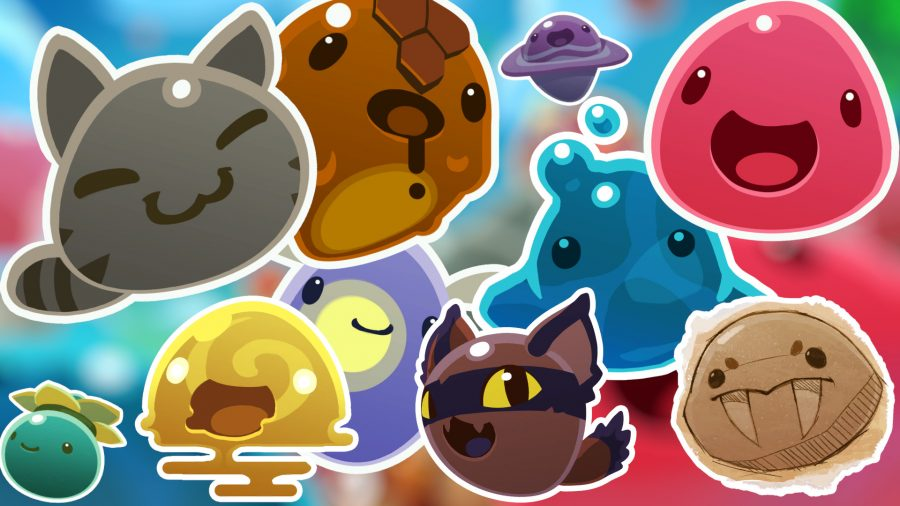

What is Slime Rancher?
Slime Rancher is a farming and adventure game where players explore a colorful world filled with adorable creatures called slimes. Players take on the role of Beatrix LeBeau, who travels to the Far, Far Range to start her own ranch.
One of my favorite things about Slime Rancher is collecting different slimes and discovering new areas. Each slime has its own appearance, behaviors, and favorite foods. I also enjoy decorating my ranch and exploring the different environments throughout the game. This is one of the only few games I have played that I almost completed 100%.
Meet the Slimes!

Some of My Favorite Slimes
These were chosen due to the challenges that had to be done in order to find some of these slimes. The plorts they drop often can be traded in for cash. The harder they are to find, the more expensive they are worth. Some of these slimes can turn hostile if left hungry. They are categorized as either liking meat, vegetables, or fruit. Although Puddle slimes do not eat, keeping them in water and occasionally splashing them with water makes them drop plorts. When you give the slime their favorite food, they will produce extra plorts. I am currently missing roughly 7 slime types from my encyclopedia in the game.
- Puddle Slime
- Phosphor Slime
- Tabby Slime
- Crystal Slime
- Glitch Slime
Explore the Far, Far Range!
If you want to learn more about Slime Rancher, visit the official website below!